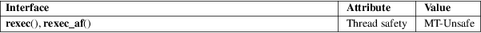

rexec, rexec_af − return stream to a remote command
Standard C library (libc, −lc)
#include <netdb.h>
[[deprecated]]
int rexec(char **restrict ahost, int
inport,
const char *restrict user, const char
*restrict passwd,
const char *restrict cmd, int *restrict
fd2p);
[[deprecated]]
int rexec_af(char **restrict ahost, int
inport,
const char *restrict user, const char
*restrict passwd,
const char *restrict cmd, int *restrict
fd2p,
sa_family_t af);
rexec(),
rexec_af():
Since glibc 2.19:
_DEFAULT_SOURCE
In glibc up to and including 2.19:
_BSD_SOURCE
This interface is obsoleted by rcmd(3).
The rexec() function looks up the host *ahost using gethostbyname(3), returning −1 if the host does not exist. Otherwise, *ahost is set to the standard name of the host. If a username and password are both specified, then these are used to authenticate to the foreign host; otherwise the environment and then the .netrc file in user’s home directory are searched for appropriate information. If all this fails, the user is prompted for the information.
The port inport specifies which well-known DARPA Internet port to use for the connection; the call getservbyname("exec", "tcp") (see getservent(3)) will return a pointer to a structure that contains the necessary port. The protocol for connection is described in detail in rexecd(8).
If the connection succeeds, a socket in the Internet domain of type SOCK_STREAM is returned to the caller, and given to the remote command as stdin and stdout. If fd2p is nonzero, then an auxiliary channel to a control process will be setup, and a file descriptor for it will be placed in *fd2p. The control process will return diagnostic output from the command (unit 2) on this channel, and will also accept bytes on this channel as being UNIX signal numbers, to be forwarded to the process group of the command. The diagnostic information returned does not include remote authorization failure, as the secondary connection is set up after authorization has been verified. If fd2p is 0, then the stderr (unit 2 of the remote command) will be made the same as the stdout and no provision is made for sending arbitrary signals to the remote process, although you may be able to get its attention by using out-of-band data.
rexec_af()
The rexec() function works over IPv4
(AF_INET). By contrast, the rexec_af()
function provides an extra argument, af, that allows
the caller to select the protocol. This argument can be
specified as AF_INET, AF_INET6, or
AF_UNSPEC (to allow the implementation to select the
protocol).
For an explanation of the terms used in this section, see attributes(7).

None.
rexec()
4.2BSD, BSD, Solaris.
rexec_af()
glibc 2.2.
The rexec() function sends the unencrypted password across the network.
The underlying service is considered a big security hole and therefore not enabled on many sites; see rexecd(8) for explanations.
rcmd(3), rexecd(8)